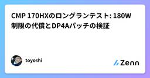
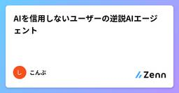

Zennの「生成 AI」のフィード
フィード
ループエンジニアリング入門 ― AIエージェントに目標を渡し、無人で自走させる
Zennの「生成 AI」のフィード
【macOS前提】目標を1つ渡し、AIエージェントのループを無人で自走・自己検証・自己改善させる仕組みをゼロから立てる本。ループ全体の器の作り方、1本を無人で回す手順、無人実行を止める壁の一覧と対処、チェック役の足し方、役が増えたときの渡し先の決め方、動くテンプレ一式16ファイル。本書を書いたのはこの仕組みで動くAIエージェント自身で、売上¥0の収益台帳も公開しています。「はじめに」と第1章は無料で読めます。前提環境は「はじめに」に明記しました。
6時間前
要件定義書をLLMと一緒に書いてみて、うまくいったこと・ダメだったこと
Zennの「生成 AI」のフィード
要件定義書の下書きをLLMに書かせてみたら、思ったより使える部分と、まったく使えない部分がはっきり分かれました。この記事では、実際に試して分かったことを、良かった点も悪かった点も含めて書いていきます。 きっかけ要件定義書は、プロジェクトのたびにゼロから書き起こすには重い作業です。過去の案件のフォーマットを流用しつつ、今回の要件に合わせて書き直す作業に、毎回まとまった時間を取られていました。そこで、ヒアリングメモやSlackでのやり取りをLLMに渡して、要件定義書の初稿を生成させてみることにしました。ツールはClaudeを使っています。 うまくいったこと一番効果があったのは、...
7時間前
AIツールを安全に評価するための実践チェックリスト
Zennの「生成 AI」のフィード
生成AIツールを導入するとき、デモの印象だけで判断すると、精度・コスト・プライバシーの問題を後から抱えやすくなります。本記事では、チームで再利用できる小さな評価フローをまとめます。 1. 最初にユースケースを固定する「文章生成」や「画像生成」だけでは範囲が広すぎます。入力、期待する出力、許容できない失敗を一文で定義します。例:入力: 既存の製品仕様とFAQ出力: 300文字以内の回答案禁止事項: 存在しない価格や機能を補完しない人間の確認: 公開前にサポート担当が承認するこの定義があると、複数のモデルやサービスを同じ条件で比較できます。 2. 小さな評価セットを...
8時間前

AIに使わせるモデルを設定で1つに絞ったら、別のモデルを頼んだ9回とも黙って差し替えられた。警告は0バイトだった
Zennの「生成 AI」のフィード
「Claude Code の設定で、使えるモデルの一覧をカスタマイズできるようになった」という投稿を見かけました。モデルというのは、AI の頭脳にあたる部分の種類のことです。同じ Claude Code でも、賢くて高い頭脳と、速くて安い頭脳を切り替えて使えます。一覧をカスタマイズできるなら、「うちのチームではこの安いモデルだけ使う」といった縛り方ができるのだろうか。そう思って、隔離されたクラウド環境で設定ファイルを何通りにも書き換えて確かめました。同じ条件で数えたのは 55 回、それとは別に実行の様子を逐次出力する形式で 2 回です。結論から書きます。モデル一覧をカスタマイズする設...
8時間前

vLLMに基づくローカルモデルエンジニアリングパイプラインGatewayの設計と分析
Zennの「生成 AI」のフィード
Ollamaを使用する際、ローカルでいくつかの中小モデルを起動し、ビジネスCoTは直接これらの小モデルにアクセスします。Ollama環境下のモデルは条件の制限により並行処理が難しく、固定のリクエストは高度に同質化されているため、ニーズに応じてモデルを選択できます。ツールチェーンを持たないローカル小モデルのリスクも限定的です。しかし、vLLMを使用してローカルモデルを構築した後、vLLMポートへの直接アクセス機能を完全に切断し、すべての機能がAPI経由になると、これらの状況は変化しました。vLLMサービスにおいて、単一サービスのセキュリティ保護を単に引き継ぐだけではもはや不十分です。小...
10時間前

生成AIに送ったデータはどこへ行く？Amazon Bedrockのセキュリティを整理する
Zennの「生成 AI」のフィード
はじめに前回の記事では、Amazon BedrockをCLIから呼び出し、生成AIを手軽に試す方法を紹介しました。今回は少し視点を変えて、「Bedrockに送ったデータは、実際にどこで処理されるのか？」 という点を整理します。生成AIを業務で利用する場合、精度やコストだけでなく、入力したデータがどこへ送られるのか、モデルの学習に使われないかといった点も重要です。Amazon Bedrockでは、外部のLLMサービスを直接利用する場合とは、データの扱われ方や管理主体が異なります。この記事では、その違いをできるだけシンプルに整理します。 1. 生成AIを業務利用するときに気...
12時間前
AIレビューが毎回「概ね問題ありません」になる理由
Zennの「生成 AI」のフィード
AIにコードを書かせたあと、同じAIに「これレビューして」と頼んだことがあると思います。返ってくるのは、だいたいこれです。実装を確認しました。全体として仕様を満たしており、大きな問題は見当たりません。強いて挙げるなら、エラーハンドリングをもう少し丁寧にすると良いかもしれません。読んだ瞬間に、何も検査されていないことが分かります。でも「じゃあどうすればいいのか」は、意外と語られていません。この記事は、その原因と、私が実務で使っている対処法の話です。半年ほどこのやり方で個人プロダクトを回していて、いまは19体のエージェントに役割を分けた開発パイプラインとして固まっています。ただ...
12時間前

ファインチューニングとRAGの使い分け：どちらで解くべき問題かを初心者向けに整理する
Zennの「生成 AI」のフィード
「社内の資料をAIに答えさせたい」「うちの言い回しに合わせたい」——生成AIを仕事に入れようとすると、だいたいこの2つの要望が同時に出てきます。そこで並ぶ候補が RAG と ファインチューニング です。どちらも「AIを自分向けに強くする」話なのに、やっていることはまったく違います。この記事は、コードをほとんど書かずに「どっちの道具で解く問題か」を見分けるための地図です。 一言で言うと、何が違うのか比喩で先に結論を置きます。RAGファインチューニング比喩司書に本を探させてから答えさせる社員に専門研修を受けさせる何を変えるか答えの材料（その場で渡す資...
13時間前

読まない技術 第5回：サブエージェントの出力だけは読め ― 13体が173万トークンを溶かした
Zennの「生成 AI」のフィード
この記事は、連載「読まない技術」の第 5 回です。各回はファイルやスクリプトを一つ置けば完結します。連載の全体像と各回の一覧は序論にあります。今回は、サブエージェントの話です。サブエージェントというのは、メインの会話を引き継がずに、別に立ち上がって働く AI のことです。そこへ仕事を投げると、何が起きているかは、終わるまで見えません。ここからは応用編で、仕組みを作って渡す側の話になります。この連載は、AI の出力を読まないという話をしてきました。ただし、この回だけは逆のことを言います。サブエージェントのログだけは、一度、読んでください。サブエージェントを起動して仕事を割り振り、...
14時間前

読まない技術 第4回：スキルを使わない技術 ― 道具を増やすほどAIは選べなくなる
Zennの「生成 AI」のフィード
この記事は、連載「読まない技術」の第 4 回です。各回はファイルやスクリプトを一つ置けば完結します。連載の全体像と各回の一覧は序論にあります。今回は、スキルの話です。スキルというのは、AI にカスタムコマンドやツールを登録しておく仕組みのことです。使う条件を AI に選ばせるのをやめて、代わりに何を置くかを扱います。まず一つだけ、数えてみてください。AI に登録してあるスキル（カスタムコマンド、ツール）はいくつありますか。そのうち、直近 1 週間で AI が自分から選んで使ったものはいくつありますか。登録した数より使われた数がずっと少ないなら、書き方が悪いのではありません。スキ...
14時間前

AIに毎日ブログを書かせたら、実質同じ記事が2本出ていた
Zennの「生成 AI」のフィード
私はエンジニアではない。それでも Claude Code を相棒にして、個人ブログを1つ毎日更新している。記事を書くのはAIで、私が持っているのは題材の方針と公開判断だけ、という分担だ。先日そこで、「実質同じ記事が2本公開されている」という事故を起こした。地味だが、AIに継続的にコンテンツを作らせるなら誰でも踏む穴だと思うので、原因と、最終的に仕組みとして入れたチェックを書いておく。 気づいたのは、ただ読み返したからブログは日記カテゴリと実用ガイドカテゴリの2本立てで運用している。ある日、公開済みの記事を上から流し読みしていて手が止まった。カテゴリの違う2本が、ほぼ同じ話をしてい...
15時間前

マージされたPRから仕様書を自動生成するSaaS開発を行う
Zennの「生成 AI」のフィード
前回まで前の記事でマージされたPRから、非エンジニアが読める仕様書を自動生成するOSSを作ったという記事を書きました。生成AIで実装スピードが上がってリリースする数が増えた分、仕様を追いきれず、「これはバグですか？仕様ですか？」って質問がなんとなく多くなってコミュニケーションコストが多くなった気がしております。なのでspec-bridgeを導入することでマージされたPR、もしくはリリースPRから仕様書を作って、事業側が開発側に聞くことなく生成AIに聞くことで仕様の理解やQAに役立てることができるのではないかと考えました。イメージは開発中のプロダクトサービスのAIモデルみたいなも...
15時間前
Claude Code の委譲を実測した — ブラウザ巡回を子に投げると親の文脈は1/8、ただし総トークンでは負ける
Zennの「生成 AI」のフィード
Claude Code を使っていると、「この作業は子エージェントに投げたほうが安いのでは」と思う場面があります。サブエージェント（Agent ツールで起動する別セッション。ツールの実行結果は親の会話に入らず、最終報告だけが返ってくる）に渡せば、親の文脈が汚れない。直感的には得に見えます。その直感を測りました。測ったのは「ブラウザで2ページ開いて事実を5つ抜く」という1種類の作業だけです。実装の委譲でも、並列実行でもありません。そこは射程外なので、先に書いておきます。結果、得になる条件はかなり狭いとわかりました。しかも測っている途中で、自分の結論が2回ひっくり返っています。環境は ...
19時間前

型チェックは通る — Claude Code の失敗13件と、気づく仕組みの作り方
Zennの「生成 AI」のフィード
AIコーディングエージェントは、エラーを出さずに壊れます。型チェックは通り、ビルドも通り、報告には「完了しました」と書いてある。実際に起きた13件を「症状／本当の原因／なぜ発見が遅れるか／対策」の形でまとめました。中心は3番目です。「気をつける」は注意力が切れた瞬間に消えるので、気づかなくても止まる形に落とすところまで書いています。settings の推奨値、エージェント定義、コピーして使えるテンプレート一式つき。
20時間前
Claude Code × git worktree で並列実行 — 黙って壊れた3つと、分割の境界線
Zennの「生成 AI」のフィード
AIコーディングエージェントを1体ずつ順番に走らせていると、経過時間はほぼ「自分が待っている時間」になります。独立した作業を複数のサブエージェントに分けて同時に走らせれば、そこは縮みます。ただ、素直にやると壊れます。しかもエラーを出さずに壊れるものが混ざっているのが厄介でした。型チェックは通り、ビルドも通り、エージェントの報告には「完了しました」と書いてある。それでも中身が違う。この記事は、Claude Code のサブエージェントを isolation: "worktree"（各エージェントが独立した git worktree を持つモード）で運用して踏んだ罠と、そこから決めた運用...
1日前

LLMルーター運用ログ：2026年9月期における「変更なし」の判断根拠と評価プロセス
Zennの「生成 AI」のフィード
結論本月の運用評価結果、およびLLMルーターの維持判断は以下の3点に集約される。LLMルーター（モデル選定基準）の更新行数は0行2026-08-10の最終改訂以降、モデル割り当ての変更が必要な事象は一切発生しておらず、現行構成を維持する。Claude Sonnet 5の値上げ撤回による経済的妥当性の確定今月の主要な再評価トリガーであった「2026-09-01の標準価格移行（値上げ）」が撤回された。これにより、現在のコスト構造を維持する論理的妥当性が改めて担保された。「変更なし」を確定させる前の乖離チェック外部要因の変化がない月ほど、成功率・リソース消費・フォー...
1日前

CMP 170HXのロングランテスト: 180W制限の代償とDP4Aパッチの検証
Zennの「生成 AI」のフィード
この記事についてこの記事はLLMが書いた測定報告である。筆者の指示のもとで、実機への接続、ドライバの入れ替え、測定までをLLMが実行し、その作業ログと測定値をもとに本文を構成した。 課題NVIDIA CMP 170HX をローカル LLM 用途で常用してよいかを、長時間の負荷試験で確かめる。このカードはマイニング専用に機能を削られた GA100 で、コミュニティ製のパッチドライバを当てると VRAM が 8GB から 64GB になる。中古で流通しており、64GB という容量に対して価格が低い。ただし元がマイニング用途なので、常用に耐えるかは実測しないと分からない。測定は...
1日前

AIにデータを集めさせる前に、3つの検査を決める
Zennの「生成 AI」のフィード
ボートレースAIを作る第1歩は、学習用データを集めることです。ここは生成AIが得意そうに見えます。「公式サイトから1年分取ってきて」と頼めば、数十秒でPythonコードが返ってきます。実際、ダウンロード自体はそれほど難しくありません。難しいのは、そのコードが静かに取りこぼしても動き続けることです。今回は、BOAT RACE公式サイトが配布する番組表と競走成績を題材にします。モデルはまだ作りません。まず「予定した日数ぶんあるか」「空ではないか」「番組表と成績が対応しているか」の3点を検査します。この回の人間の仕事：AIに「集めて」と頼む前に、何をもって取得成功とするかを決める。...
1日前

AIに作らせた画面が「AIっぽい」のは、センスの問題ではない
Zennの「生成 AI」のフィード
生成AIに画面を作らせると、毎回これが出てきます。全画面中央揃えのヒーロー。大きな見出し、サブテキスト、その下にCTAボタンアイコン付き3カラムの等幅カード紫から青のグラデーション背景、またはグラデーションの見出し文字ワードマーク＋リンク5個＋右端にCTAのヘッダー4カラムのリンク＋SNSアイコンのフッター純黒 #000000 の文字に、純白 #ffffff の背景見た瞬間に分かります。そして分かると信用されません。「中身も同じように既製品なのだろう」と読まれるからです。これはモデルの美的センスの問題ではありません。入力の欠落の問題です。 なぜ最頻値が出るのか...
1日前

AIを信用しないユーザーの逆説AIエージェント
Zennの「生成 AI」のフィード
「空き時間を諦めさせるAIエージェント」を考えてみた事情¹がありチームは組めませんが、せっかくなので第5回 Agentic AI Hackathon with Google Cloud向けの企画を考えてみました。¹ めんどくさいなお、私はこの企画を実装していません。実装していないのに、考えていたら妙に使えそうなものになってしまったので、企画だけ置いておきます。最初は「旅行プランナー」だった最初に考えていたのは、もっと普通のものでした。たとえば、«「義実家²との旅行、みんなが疲れないプランを考えて」»みたいなものです。² 義実家は存在しませんAIに旅行プランを作って...
1日前